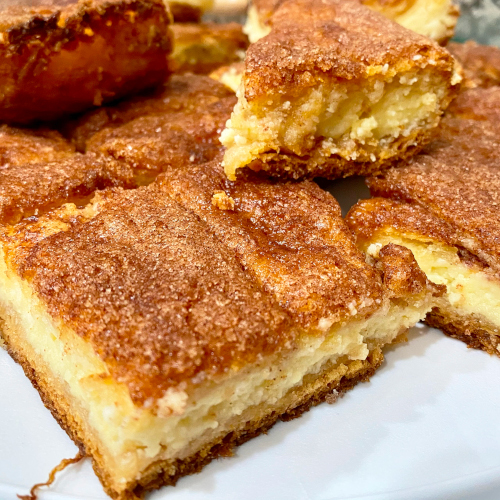

Cream Cheese Squares

Description
These cream cheese bars are very easy and very good.
Ingredients
- 2 (8 ounce) cans refrigerated crescent roll dough
- 2 (8 ounce) packages cream cheese, softened
- 1 ¼ cups white sugar, divided
- 1 teaspoon vanilla extract
- ½ cup margarine, melted
- 1 teaspoon ground cinnamon
Steps
- Preheat the oven to 350 degrees F (175 degrees C).
Grease a 9x13-inch baking pan.
- Unroll one can of crescent rolls and press dough
into the bottom of the prepared pan. Set second can aside.
- Mix together cream cheese, 1 cup sugar, and vanilla in a medium
bowl until smooth and creamy. Spread over crescent dough layer.
Unroll second can of crescent rolls and lay dough on top of cream
cheese mixture; do not press down.
- Pour melted margarine over the entire pan.
Combine remaining 1/4 cup sugar and cinnamon in a small bowl;
sprinkle on top.
- Bake in the preheated oven until top is crisp and golden,
25 to 30 minutes. Once cool, cut into 24 squares.